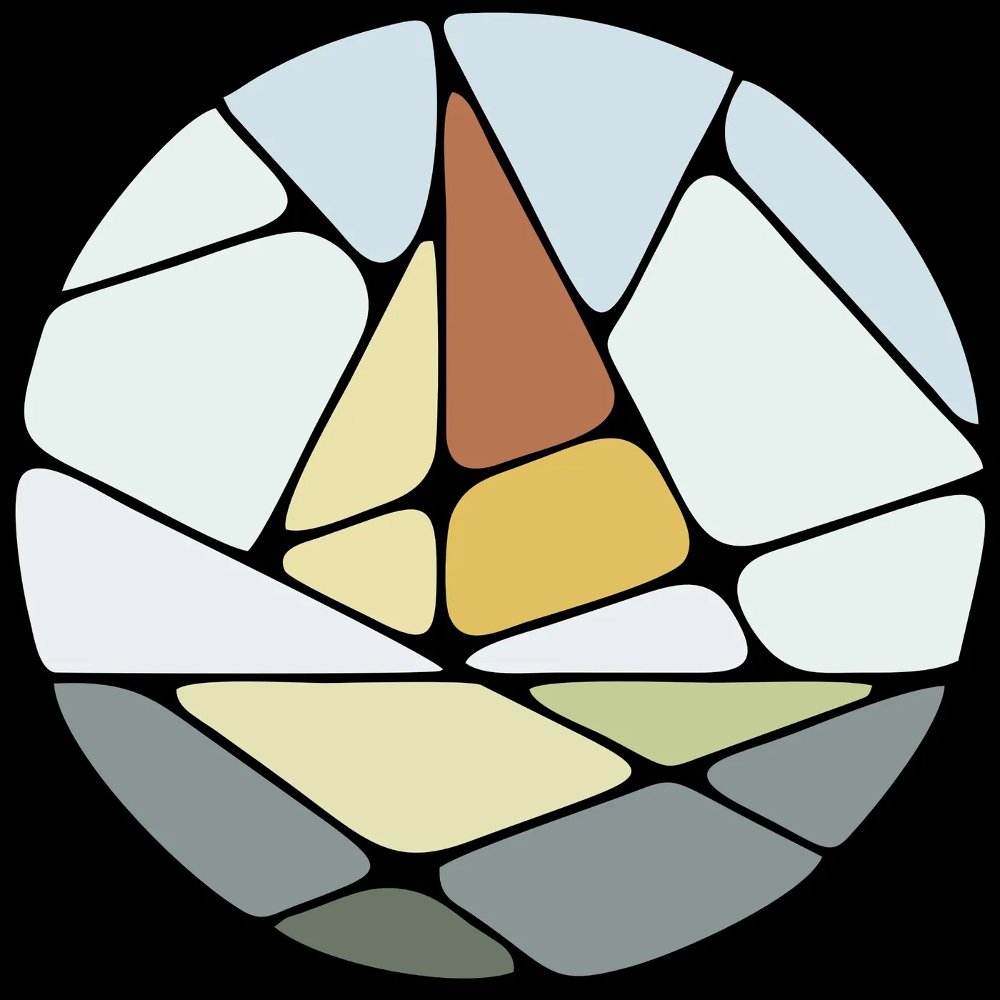

Изучите продукт, регламенты, работу с клиентами и пройдите финальный тест. 4 модуля — от основ до аттестации.
Трим А/Б/С/Д/Е/ПР, форель, лосось, масляная. Армения vs Осетия. Триплоид.
Оплаты, просрочки, позиционирование, первая сделка, стиль общения.
AmoCRM, раздел «Покупатели», Мой Склад, договоры, прайс, дебиторка, NDA.
УТП, ценовой анализ, сегменты клиентов, оптовый канал.
Мясо птицы (курица, утка, индейка, перепел), морепродукты (вонголе), плоская рыба (камбала), сурими (крабовые палочки).
Разбор реальных сделок шаг за шагом — от первого сообщения до подписания договора.
За что тебе платят: формула, множители, бонусы, штрафы. Осознанность как фундамент роста.